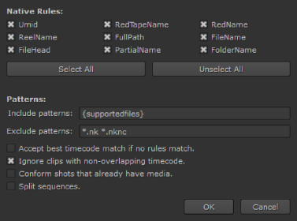
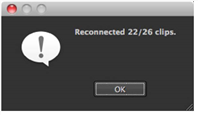
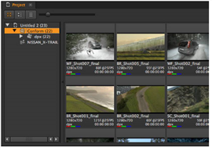
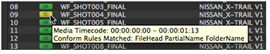

To conform a sequence using a browser:
| 1. | After importing a sequence, click Match Media on the spreadsheet and use the browser to locate the source folder containing the correct media. |
NOTE: Match Media can also be used on selected events in the Spreadsheet view.
| 2. | Click Open to display the Conform Options dialog. |

Nuke Studio uses a set of conform Rules and file name Patterns to match candidate media files on disk to the events, or clip instances, in a sequence:
• Rules - sets the offline media properties to match to the corresponding spreadsheet entry during conform.
Rules that rely on information that doesn't exist in the event or candidate clip are ignored, and some rules compound others to identify a better match.
|
Rule |
Description |
|
Umid |
Match a file’s unique material ID (UMID) – that is written into the file's metadata on creation – to the candidate media’s UMID. If either, or both, lack a UMID this rule is ignored. |
|
RedTapeName |
Match a RED-style camera reel name from the event to the candidate media name. |
|
RedName |
Look for a RED-style camera file name in the event that matches the candidate media name. |
|
ReelName |
Look for the event's reel name in the candidate's media name. |
|
FullPath |
Match the event's entire filepath to the candidate media’s entire filepath. |
|
FileName |
Match only the event's file name (no path) to the candidate media’s file name. |
|
FileHead |
Match the event's file name head (no path, file extension, or padding) to the candidate media’s file name. |
|
PartialName |
Look for the event's name in the candidate media’s name and vice versa. |
|
FolderName |
Look for the event's name in the filepath of the candidate media. |
All rules are enabled by default, but you may occasionally need to disable rules if they cause incorrect matches between a particular edit and set of source clips.
TIP: Use the Select/Deselect All buttons to quickly enable or disable rules.
• Patterns - sets the inclusion and exclusion parameters during the conform, separated by spaces. For example, *mov *dpx would only include or exclude .mov and .dpx files.
You could also conform by name, such as BR_Shot*, which would only include or exclude source clip names starting with that string.
TIP: It’s always a good idea to be as specific as possible with search locations during conforms, but if the need arises, conform Rules and Patterns can save time.
| 3. | Enable Accept best timecode match... to use the nearest source timecode match to conform the event, if no rules are matched. |
| 4. | When Ignore clips with non-overlapping timecodes is enabled, any potentially matching source clip whose timecode doesn't overlap the clip instance in question at all is ignored. |
| 5. | Check Conform shots that already have media if you want to update all timeline clip instances. By default, the application doesn’t try to conform events that are not offline. |
| 6. | When Split sequences is enabled, any non-contiguous file sequences found by the conform are split into separate clips, in the same way as when the split seq option is enabled in the file browser. |
| 7. | Click OK to begin the conform process. |
Nuke Studio attempts to conform the edits with the selected media.
A dialog box informs you of the success rate once the conform is complete.

Successfully matched media is placed in a new Conform bin in the project.

NOTE: You can display the conform Rules matched for each spreadsheet object by hovering the cursor over the required entry.

|
|